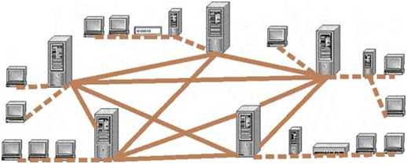

ЛЕКЦИЯ № 27. (2 часа)
ТЕМА: «ГЛОБАЛЬНЫЕ СЕТИ И ТЕХНОЛОГИИ ГЛОБАЛЬНЫХ СЕТЕЙ»
Рассматриваемые вопросы:
1.Структура и основные принципы построения сети Интернет
2. Способы доступа к глобальные сети Интернет
3. Адресация в глобальной сети Интернет
Литература: http://www.lessons-tva.info/edu/e-inf3/m3t2_4.html
Ход лекции:
1.Структура и основные принципы построения сети Интернет
Internet – всемирная информационная компьютерная сеть, представляющая собой объединение множества региональных компьютерных сетей и компьютеров, обменивающих друг с другом информацией по каналам общественных телекоммуникаций (выделенным телефонным аналоговым и цифровым линиям, оптическим каналам связи и радиоканалам, в том числе спутниковым линиям связи).
Информация в Internet хранится на серверах. Серверы имеют свои адреса и управляются специализированными программами. Они позволяют пересылать почту и файлы, производить поиск в базах данных и выполнять другие задачи.
Обмен информацией между серверами сети выполняется по высокоскоростным каналам связи (выделенным телефонным линиям, оптоволоконным и спутниковым каналам связи). Доступ отдельных пользователей к информационным ресурсам Internet обычно осуществляется через провайдера или корпоративную сеть.
Провайдер - поставщик сетевых услуг – лицо или организация предоставляющие услуги по подключению к компьютерным сетям. В качестве провайдера выступает некоторая организация, имеющая модемный пул для соединения с клиентами и выхода во всемирную сеть.
Основными ячейками глобальной сети являются локальные вычислительные сети. Если некоторая локальная сеть непосредственно подключена к глобальной, то и каждая рабочая станция этой сети может быть подключена к ней.
Существуют также компьютеры, которые непосредственно подключены к глобальной сети. Они называются хост - компьютерами (host - хозяин). Хост – это любой компьютер, являющийся постоянной частью Internet, т.е. соединенный по Internet – протоколу с другим хостом, который в свою очередь, соединен с другим, и так далее.

Рис. 1. Структура глобальной сети Internet
Для подсоединения линий связи к компьютерам используются специальные электронные устройства, которые называются сетевыми платами, сетевыми адаптерами, модемами и т.д.
Практически все услуги Internet построены на принципе клиент-сервер. Вся информация в Интернет хранится на серверах. Обмен информацией между серверами осуществляется по высокоскоростным каналам связи или магистралям. Серверы, объединенные высокоскоростными магистралями, составляют базовую часть сети Интернет.
Отдельные пользователи подключаются к сети через компьютеры местных поставщиков услуг Интернета, Internet - провайдеров (InternetServiceProvider - ISP), которые имеют постоянное подключение к Интернет. Региональный провайдер, подключается к более крупному провайдеру национального масштаба, имеющего узлы в различных городах страны. Сети национальных провайдеров объединяются в сети транснациональных провайдеров или провайдеров первого уровня. Объединенные сети провайдеров первого уровня составляют глобальную сеть Internet.
Передача информации в Интернет обеспечивается благодаря тому, что каждый компьютер в сети имеет уникальный адрес (IP-адрес), а сетевые протоколы обеспечивают взаимодействие разнотипных компьютеров, работающих под управлением различных операционных систем.
В основном в Интернет используется семейство сетевых протоколов (стек) TCP/IP. На канальном и физическом уровне стек TCP/IP поддерживает технологию Ethernet, FDDI и другие технологии. Основой семейства протоколов TCP/IP является сетевой уровень, представленный протоколом IP, а также различными протоколами маршрутизации. Этот уровень обеспечивает перемещение пакетов в сети и управляет их машрутизацией. Размер пакета, параметры передачи, контроль целостности осуществляется на транспортном уровне TCP.
Прикладной уровень объединяет все службы, которые система предоставляет пользователю. К основным прикладным протоколам относятся: протокол удаленного доступа telnet, протокол передачи файлов FTP, протокол передачи гипертекста HTTP, протоколы электронной почты: SMTP, POP, IMAP, MIME.
2. Способы доступа к глобальные сети Интернет
В настоящее время известны следующие способы доступа в Интернет:
Рассмотрим подробнее беспроводные технологии последней мили:
В настоящее время WiMAX частично удовлетворяет условиям сетей 4G, основанных на пакетных протоколах передачи данных. К семейству 4G относят технологии, которые позволяют передавать данные в сотовых сетях со скоростью выше 100 Мбит/сек. и повышенным качеством голосовой связи. Для передачи голоса в 4G предусмотрена технология VoIP.
Технология GPRS обеспечивает скорость передачи данных до 114 Кбит/с. При использовании технологии GPRS тарифицируется не время соединения с Интернетом, а суммарный объем переданной и полученной информации. Вы сможете просматривать HTML-страницы, перекачивать файлы, работать с электронной почтой и любыми другими ресурсами Интернет.
Технология GPRS - это усовершенствование базовой сети GSM или протокол пакетной коммутации для сетей стандарта GSM. EDGE является продолжением развития сетей GSM/GPRS. Технология EDGE (улучшенный GPRS или EGPRS) обеспечивает более высокую скорость передачи данных по сравнению с GPRS (скорость до 200 Кбит/сек). EDGE (2,5 G) – это первый шаг на пути к 3G технологии.
В настоящее время технология CDMA предоставляет услуги мобильной связи третьего поколения. Технологии мобильной связи 3G (thirdgeneration — третье поколение) — набор услуг, который обеспечивает как высокоскоростной мобильный доступ к сети Интернет, так и организовывает видеотелефонную связь и мобильное телевидение. Мобильная связь третьего поколения строится на основе пакетной передачи данных. Сети третьего поколения 3G работают в диапазоне около 2 ГГц, передавая данные со скоростью до 14 Мбит/с.
Сети третьего поколения 3G реализованы на различных технологиях, основанных на следующих стандартах: W-CDMA (WidebandCodeDivisionMultipleAccess) и его европейском варианте – UMTS (UniversalMobileTelecommunicationSystem), который является приемником GSM/GPRS/EDGE; CDMA2000 1X, являющимся модификацией стандарта CDMA; китайским вариантом - TD-CDMA/TD-SCDMA.
Следует отметить, то в настоящее время для "последних метров" доступа в Internet применяются технологии Home PNA (HPNA) и HomePlug. Доступ в Интернет по выделенным линиям Home PNA или HPNA (телефонным линиям) и доступ через бытовую электрическую сеть напряжением 220 вольт (HomePlug, Plug — это штепсель).
Обычно доступ к Интернету по выделенным линиям Home PNA и HomePlug комбинируется с такими методами доступа как DSL, WiFi, и другими, т.е. для "последних метров" доступа применяются технологии Home PNA и HomePlug, а в качестве "последней мили" доступа используются DSL, WiFi и другие технологии.
Скорость передачи данных HPNA 1.0 составляет 1 Мбит/с, а расстояние между наиболее удаленными узлами не превышает 150 метров. Спецификация HomePNA 2.0 обеспечивает доступ со скоростью до 10 Мбит/с и расстояние до 350 м.
Технология Home PNA применяется в основном для организации домашней сети с помощью сетевых адаптеров. Подключение к глобальной сети можно осуществить с помощью роутера через сети общего доступа. Кроме того, технология HPNA предназначена для организации коллективного доступа в Интернет (например, для подключения жилого дома или подъезда дома к Интернет по существующей телефонной проводке). Телефонную линию при этом можно использовать для ведения переговоров.
Стандарт HomePlug 1.0 доступ к Интернет через бытовую электрическую сеть поддерживает скорость передачи до 14 Мбит/с. максимальная протяжённость между узлами до 300 м. Компания Renesas, выпустила модем в виде штепсельной вилки для передачи данных по электросетям.
Технология PLС (PowerLineCommunication) позволяет передавать данные по высоковольтным линиям электропередач, без дополнительных линий связи. Компьютер подключается к электрической сети и выходит в Интернет через одну и ту же розетку. Для подключения к домашней сети не требуется никаких дополнительных кабелей. К домашней сети можно подключить различное оборудование: компьютеры, телефоны, охранную сигнализацию, холодильники.
3. Адресация в глобальной сети Интернет
Основным протоколом сети Интернет является сетевой протокол TCP/IP. Каждый компьютер, в сети TCP/IP (подключенный к сети Интернет), имеет свой уникальный IP-адрес или IP – номер. Адреса в Интернете могут быть представлены как последовательностью цифр, так и именем, построенным по определенным правилам. Компьютеры при пересылке информации используют цифровые адреса, а пользователи в работе с Интернетом используют в основном имена.
Цифровые адреса в Интернете состоят из четырех чисел, каждое из которых не превышает двухсот пятидесяти шести. При записи числа отделяются точками, например: 195.63.77.21. Такой способ нумерации позволяет иметь в сети более четырех миллиардов компьютеров.
Для отдельного компьютера или локальной сети, которые впервые подключаются к сети Интернет, специальная организация, занимающейся администрированием доменных имен, присваивает IP – номера.
Первоначально в сети Internet применялись IP – номера, но когда количество компьютеров в сети стало больше чем 1000, то был принят метод связи имен и IP – номеров, который называется сервер имени домена (DomainNameServer, DNS). Сервер DNS поддерживает список имен локальных сетей и компьютеров и соответствующих им IP – номеров.
В Интернете применяется так называемая доменная система имен. Каждый уровень в такой системе называется доменом. Типичное имя домена состоит из нескольких частей, расположенных в определенном порядке и разделенных точками. Домены отделяются друг от друга точками, например: www.lessons-tva.info или yyy.zzz.ua.
В Интернете доменная система имен использует принцип последовательных уточнений также как и в обычных почтовых адресах - страна, город, улица и дом, в который следует доставить письмо.
Домен верхнего уровня располагается в имени правее, а домен нижнего уровня - левее. В нашем примере домены верхнего уровня info и ua указывают на то, что речь идет о принадлежности сайта www.lessons-tva.info к тематическому домену верхнего уровня info, а сайта yyy.zzz.ua к украинской (ua) части Интернета. Но в Украине множество пользователей Интернета, и следующий уровень определяет организацию, которой принадлежит данный адрес. В нашем случае это компания zzz.
Интернет-адрес этой компании - zzz.ua. Все компьютеры, подключенные к Интернету в этой компании, объединяются в группу, имеющую такой адрес. Имя отдельного компьютера или сети каждая компания выбирает для себя самостоятельно, а затем регистрирует его в той организации Интернет, которая обеспечивает подключение.
Это имя в пределах домена верхнего уровня должно быть уникальным. Далее следует имя хоста yyy, таким образом, полное имя домена третьего уровня: yyy.zzz.ua. В имени может быть любое число доменов, но чаще всего используются имена с количеством доменов от трех до пяти.
Доменная система образования адресов гарантирует, что во всем Интернете больше не найдется другого компьютера с таким же адресом. Для доменов нижних уровней можно использовать любые адреса, но для доменов самого верхнего уровня существует соглашение.
В системе адресов Интернета приняты домены, представленные географическими регионами. Они имеют имя, состоящее из двух букв, например:
Существуют и домены, разделенные по тематическим признакам, например:
В последнее время добавлены новые зоны, например: biz, info, in, .cn и так далее
При работе в Internet используются не доменные имена, а универсальные указатели ресурсов, называемые URL (UniversalResourceLocator). URL - это адрес любого ресурса (документа, файла) в Internet, он указывает, с помощью какого протокола следует к нему обращаться, какую программу следует запустить на сервере и к какому конкретному файлу следует обратиться на сервере.
Общий вид URL: протокол://хост-компьютер/имя файла (например: http://www.lessons-tva.info/book.html).
Регистрация домена осуществляется в выбранной пользователем зоне ua, ru, com, net, info и так далее. В зависимости от назначения сайта выбирается его зона регистрации. Для регистрации сайта желательно выбрать домен второго уровня, напримерlessons-tva.info, хотя можно работать и с доменом третьего уровня.
Домен второго уровня регистрируется у регистратора – организации занимающейся администрированием доменных имен, например http://www.imhoster.net/domain.htm. Домен третьего уровня приобретается, как правило, вместе с хостингом у хостинговой компании. Имя сайта выбирают исходя из вида деятельности, названия компании или фамилии владельца сайта.